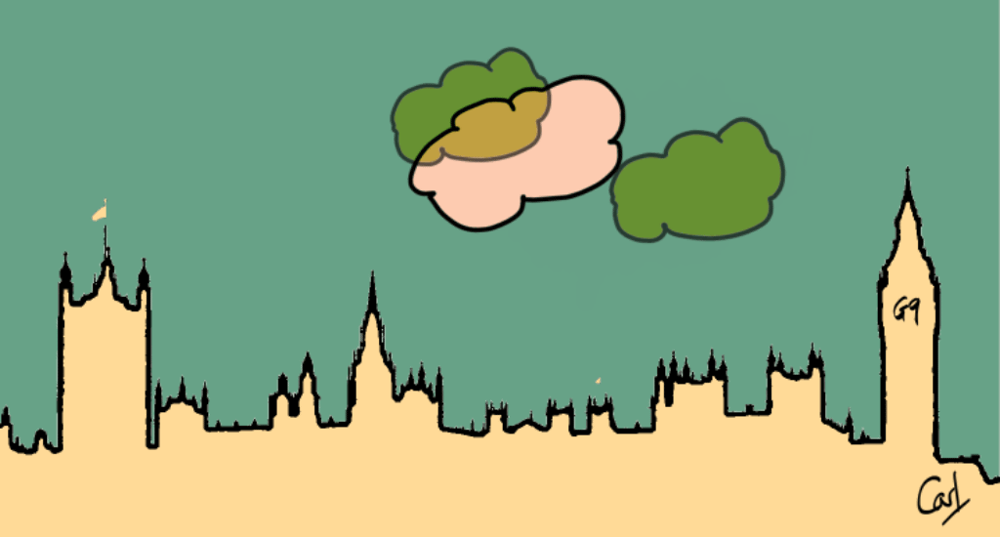
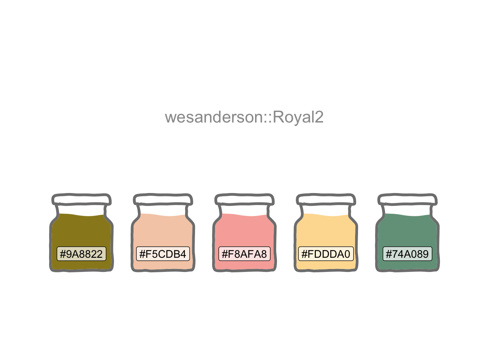
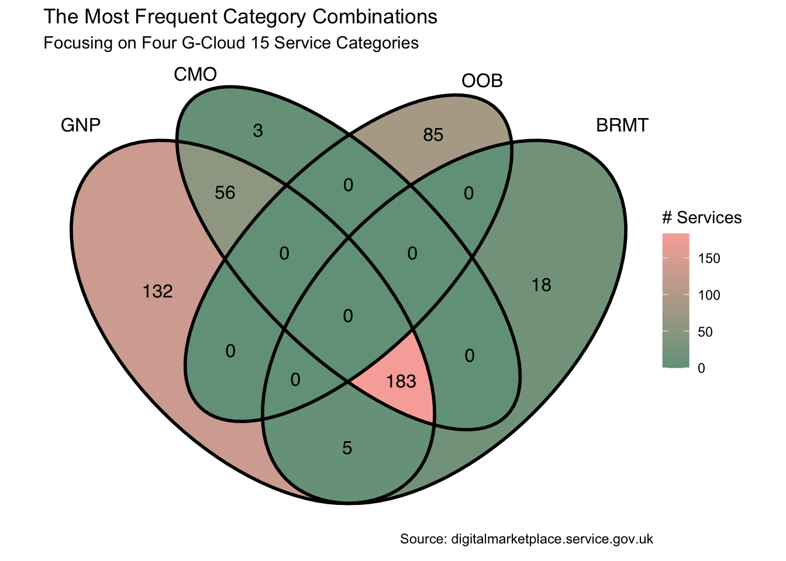
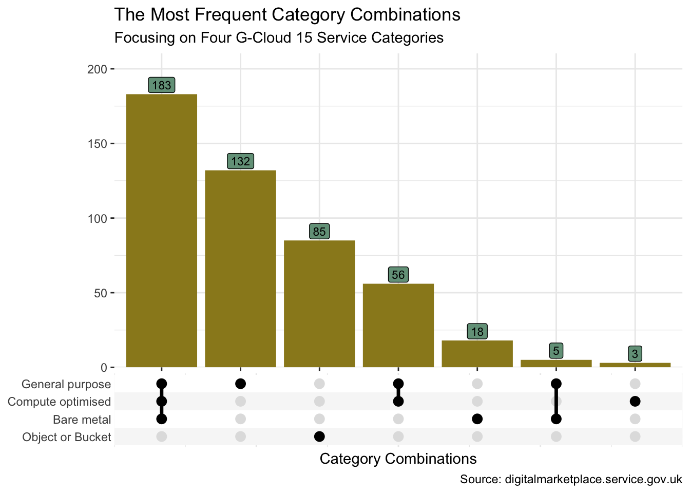
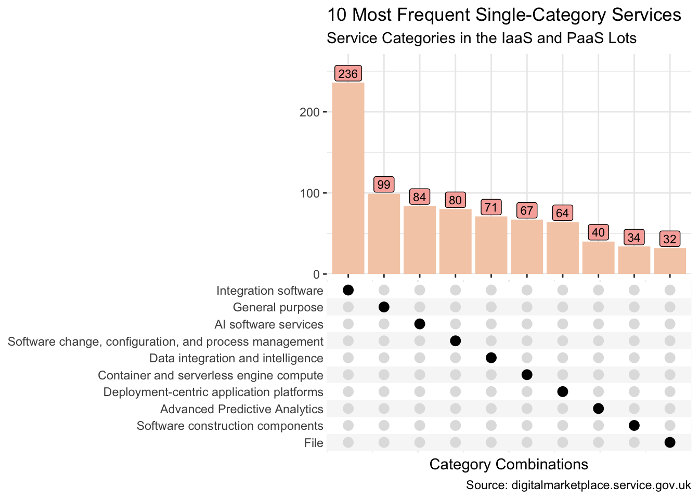

library(conflicted)
library(tidyverse)
library(rvest)
library(mirai)
library(tictoc)
library(ggupset)
library(ggVennDiagram)
library(glue)
library(paletteer)
library(ggfoundry)
library(usedthese)
conflict_prefer_all("dplyr", quiet = TRUE)
conflict_scout()
daemons(10)Where Clouds Cross
R
sets
web scraping
regex
Visualising the dozens of overlapping sets formed by categories of cloud services

When visualising a small number of overlapping sets, Venn diagrams work well. But what if there are more. Here’s a tidyverse approach to the exploration of sets and their intersections.
In Let’s Jitter I looked at a relatively simple set of cloud-service-related sales data. G-Cloud data offers a much richer source with many thousands of services documented by several thousand suppliers and hosted across myriad web pages. These services straddle many categories. I’ll use these data to explore the sets and where they cross.
theme_set(theme_bw())
pal_name <- "wesanderson::Royal2"
pal <- paletteer_d(pal_name)
display_palette(pal, pal_name)
I’m going to focus on Lot 1a: Infrastructure as a Service (IaaS) and Platform as a Service (PaaS), the successor to the old Cloud Hosting lot in the current G-Cloud framework. Suppliers document the services they want to offer to Public Sector buyers. Each supplier is free to assign each of their services to one or more service categories. It would be interesting to see how these categories overlap when looking at the aggregated data.
I’ll begin by harvesting each category’s taxonomy value and service count from the lot’s search page. Service categories now form a nested taxonomy tree, where a parent such as IaaS Compute rolls up all of its children. I’ll keep only the leaf categories so that sets don’t double-count parent and child memberships. I’ll also capture the number of search pages for each category, to control how R iterates through the web pages to extract the required data.
path <- "https://www.applytosupply.digitalmarketplace.service.gov.uk/g-cloud/search"
lot <- "iaas-and-paas"
lot_label <- "Lot 1a"
lot_page <- str_c(path, "?lot=", lot) |>
read_html()
is_leaf <- \(values) {
map_lgl(values, \(v) !any(str_detect(values, str_c("^", fixed(v), "-"))))
}
cat_urls <-
lot_page |>
html_elements('input[name="serviceCategories"]') |>
map(\(input) {
tibble(
value = html_attr(input, "value"),
label = input |>
html_element(xpath = "following-sibling::label") |>
html_text2()
)
}) |>
list_rbind() |>
filter_out(is.na(value), is.na(label)) |>
filter(is_leaf(value)) |>
mutate(
category = str_remove(label, "\\s*\\([0-9,]+\\)\\s*$"),
n_services = as.numeric(str_extract(label, "\\d+")),
pages = ceiling(n_services / 30),
url = str_c("&serviceCategories=", value)
) |>
select(url, pages, category)
version <- lot_page |>
html_elements(".app-search-result:first-child") |>
html_text() |>
str_extract("G-Cloud \\d\\d")So now I’m all set to parallel process through the data. {mirai} (Gao 2026) will fan out across the daemons, iterating through the pages of search results for each category, harvesting 30 service IDs per page. I’ll also auto-abbreviate the category names so I’ll have the option of more concise names for less-cluttered plotting later on.
Tip
Hover over the numbered code annotation symbols for REGEX explanations.
tic()
scrape_ids <- possibly(
\(url, page, category, path, lot, lot_label) {
refs <- stringr::str_c(
path,
"?page=",
page,
url,
"&lot=",
lot
) |>
rvest::read_html() |>
rvest::html_elements("#js-dm-live-search-results .govuk-link") |>
rvest::html_attr("href")
tibble::tibble(
lot = lot_label,
service_id = stringr::str_extract(refs, "[[:digit:]]{15}"),
category = category
)
},
otherwise = NULL
)
scraped <- mirai_map(
uncount(cat_urls, pages, .id = "page"),
scrape_ids,
.args = list(path = path, lot = lot, lot_label = lot_label)
)[.progress]
data_df <-
scraped |>
list_rbind() |>
mutate(
abbr = str_remove(category, "and") |> abbreviate(3) |> str_to_upper()
) |>
filter_out(is.na(service_id)) |>
distinct()
toc()- 1
-
[[:digit:]]{15}finds the 15-digit service ID in the scraped link.
20.777 sec elapsedNow that I have a nice tidy tibble (Müller and Wickham 2022), I can start to think about visualisations.
I like Venn diagrams. But to create one I’ll first need to do a little prep as ggVennDiagram (Gao 2022) requires separate character vectors for each set.
all_cats <- data_df |>
summarise(ids = list(service_id), .by = abbr) |>
tibble::deframe()Venn diagrams work best with a small number of sets. So we’ll select four categories.
four_cats <- all_cats[c("GNP", "CMO", "OOB", "BRMT")]
four_cats |>
ggVennDiagram(label = "count", label_alpha = 0) +
scale_fill_gradient(low = pal[5], high = pal[3]) +
scale_colour_manual(values = rep(pal[4], 4)) +
labs(
x = "Category Combinations",
y = NULL,
fill = "# Services",
title = "The Most Frequent Category Combinations",
subtitle = glue("Focusing on Four {version} Service Categories"),
caption = "Source: digitalmarketplace.service.gov.uk\n"
)
Let’s suppose I want to find out which Service IDs lie in a particular intersection. Perhaps I want to go back to the web site with those IDs to search for, and read up on, those particular services. I could use {purrr}’s reduce to achieve this. For example, let’s extract the IDs at the heart of the Venn which intersect all categories.
four_cats |> reduce(intersect)character(0)And if we wanted the IDs intersecting the “OOB” and “BRMT” categories?
four_cats[c("OOB", "BRMT")] |> reduce(intersect)character(0)Sometimes though we need something a little more scalable than a Venn diagram. The {ggupset} package provides a good solution. Before we try more than four sets though, I’ll first use the same four categories so we may compare the visualisation to the Venn.
make_set_df <- \(df) {
df |>
mutate(category = list(sort(unique(category))), .by = service_id) |>
distinct(service_id, category) |>
mutate(n = n(), .by = category)
}
top_combos <- \(df, k) {
keep <- df |>
distinct(category, n) |>
slice_max(n, n = k, with_ties = FALSE)
semi_join(df, keep, by = "category")
}
set_df <- data_df |>
filter(abbr %in% c("GNP", "CMO", "OOB", "BRMT")) |>
make_set_df()
set_df |>
ggplot(aes(category)) +
geom_bar(fill = pal[1]) +
geom_label(
aes(y = n, label = n),
data = \(d) distinct(d, category, n),
vjust = -0.1,
size = 3,
fill = pal[5]
) +
scale_x_upset() +
scale_y_continuous(expand = expansion(mult = c(0, 0.15))) +
theme(panel.border = element_blank()) +
labs(
x = "Category Combinations",
y = NULL,
title = "The Most Frequent Category Combinations",
subtitle = glue("Focusing on Four {version} Service Categories"),
caption = "Source: digitalmarketplace.service.gov.uk"
)
Now let’s take a look at the intersections across all the categories. And let’s suppose that our particular interest is all services which appear in one, and only one, category.
set_df <- data_df |>
filter(n() == 1, .by = service_id) |>
make_set_df() |>
top_combos(10)
set_df |>
ggplot(aes(category)) +
geom_bar(fill = pal[2]) +
geom_label(
aes(y = n, label = n),
data = \(d) distinct(d, category, n),
vjust = -0.1,
size = 3,
fill = pal[3]
) +
scale_x_upset() +
scale_y_continuous(expand = expansion(mult = c(0, 0.15))) +
theme(panel.border = element_blank()) +
labs(
x = "Category Combinations",
y = NULL,
title = "10 Most Frequent Single-Category Services",
subtitle = "Service Categories in the IaaS and PaaS Lots",
caption = "Source: digitalmarketplace.service.gov.uk"
)
Suppose we want to extract the intersection data for the top intersections across all sets. I can flatten each service’s categories into a single sorted label, then count, using {dplyr} (Wickham et al. 2022) and {stringr}.
flatten_combos <- \(df, col) {
df |>
summarise(
combo = str_flatten(sort(unique(.data[[col]])), " | "),
.by = service_id
)
}
cat_mix <- data_df |>
flatten_combos("category") |>
count(combo, name = "n") |>
arrange(desc(n)) |>
slice(1:21) |>
rename(
"Intersecting Categories" = combo,
"Services Count" = n
)
cat_mix| Intersecting Categories | Services Count |
|---|---|
| Integration software | 236 |
| General purpose | 99 |
| AI software services | 84 |
| Software change, configuration, and process management | 80 |
| APUs | Arm-based instances | Bare metal | Compute optimised | Container and serverless engine compute | General purpose | GPUs | Memory optimised | Other non-x86 instances | 72 |
| Data integration and intelligence | 71 |
| APUs | Arm-based instances | Bare metal | Compute optimised | Container and serverless engine compute | General purpose | GPUs | Memory optimised | 67 |
| Container and serverless engine compute | 67 |
| Deployment-centric application platforms | 64 |
| Block | File | Object or Bucket | 53 |
| Advanced Predictive Analytics | 40 |
| Data integration and intelligence | Database administration and development | Database management systems | Databases | 39 |
| AI life cycle | AI software services | 38 |
| Event stream processing | Integration software | 38 |
| Advanced Predictive Analytics | Business Intelligence | 37 |
| Database management systems | Databases | 35 |
| Software construction components | 34 |
| File | 32 |
| AI life cycle | AI software services | Search and knowledge discovery | 28 |
| Event stream processing | 28 |
| Development languages, environments, and tools | 27 |
And I can compare this table to the equivalent ggupset (Ahlmann-Eltze 2020) visualisation.
set_df <- data_df |>
make_set_df() |>
top_combos(21)
set_df |>
ggplot(aes(category)) +
geom_bar(fill = pal[5]) +
geom_label(
aes(y = n, label = n),
data = \(d) distinct(d, category, n),
vjust = -0.1,
size = 3,
fill = pal[4]
) +
scale_x_upset() +
scale_y_continuous(expand = expansion(mult = c(0, 0.15))) +
theme(panel.border = element_blank()) +
labs(
x = "Category Combinations",
y = NULL,
title = "Top Intersections Across all Sets",
subtitle = "Service Categories in the IaaS and PaaS Lots",
caption = "Source: digitalmarketplace.service.gov.uk"
)
And if I want to extract all the service IDs for the top 5 intersections, I could use {dplyr} (Wickham et al. 2022) verbs to achieve this too.
I won’t print them all out though!
combos_df <- data_df |>
flatten_combos("abbr")
top5_int <- combos_df |>
semi_join(
count(combos_df, combo, name = "n") |> slice_max(n, n = 5),
by = "combo"
)
top5_int |>
summarise(service_ids = n_distinct(service_id))| service_ids |
|---|
| 571 |
R Toolbox
Summarising below the packages and functions used in this post enables me to separately create a toolbox visualisation summarising the usage of packages and functions across all posts.
used_here()| Package | Function |
|---|---|
| base | abbreviate[1], any[1], as.numeric[1], c[6], ceiling[1], is.na[3], library[11], list[3], rep[1], sort[2], unique[2] |
| conflicted | conflict_prefer_all[1], conflict_scout[1] |
| dplyr | arrange[1], count[2], desc[1], distinct[6], filter[3], filter_out[2], mutate[4], n[2], n_distinct[1], rename[1], select[1], semi_join[2], slice[1], slice_max[2], summarise[3] |
| ggVennDiagram | ggVennDiagram[1] |
| ggfoundry | display_palette[1] |
| ggplot2 | aes[6], element_blank[3], expansion[3], geom_bar[3], geom_label[3], ggplot[3], labs[4], scale_colour_manual[1], scale_fill_gradient[1], scale_y_continuous[3], theme[3], theme_bw[1], theme_set[1] |
| ggupset | scale_x_upset[3] |
| glue | glue[2] |
| mirai | daemons[1], mirai_map[1] |
| paletteer | paletteer_d[1] |
| purrr | list_rbind[2], map[1], map_lgl[1], possibly[1], reduce[2] |
| rvest | html_attr[2], html_element[1], html_elements[3], html_text[1], html_text2[1], read_html[1] |
| stringr | fixed[1], str_c[4], str_detect[1], str_extract[3], str_flatten[1], str_remove[2], str_to_upper[1] |
| tibble | deframe[1], tibble[2] |
| tictoc | tic[1], toc[1] |
| tidyr | uncount[1] |
| usedthese | used_here[1] |
| xml2 | read_html[1] |
References
Ahlmann-Eltze, Constantin. 2020. Ggupset: Combination Matrix Axis for ’Ggplot2’ to Create ’UpSet’ Plots. https://CRAN.R-project.org/package=ggupset.
Gao, Charlie. 2026. Mirai: Minimalist Async Evaluation Framework for r. https://CRAN.R-project.org/package=mirai.
Gao, Chun-Hui. 2022. ggVennDiagram: A ’Ggplot2’ Implement of Venn Diagram. https://CRAN.R-project.org/package=ggVennDiagram.
Müller, Kirill, and Hadley Wickham. 2022. Tibble: Simple Data Frames. https://CRAN.R-project.org/package=tibble.
Wickham, Hadley, Romain François, Lionel Henry, and Kirill Müller. 2022. Dplyr: A Grammar of Data Manipulation. https://CRAN.R-project.org/package=dplyr.